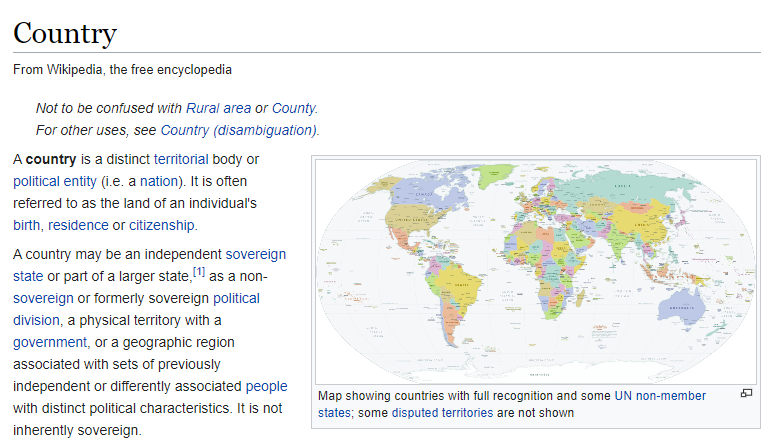
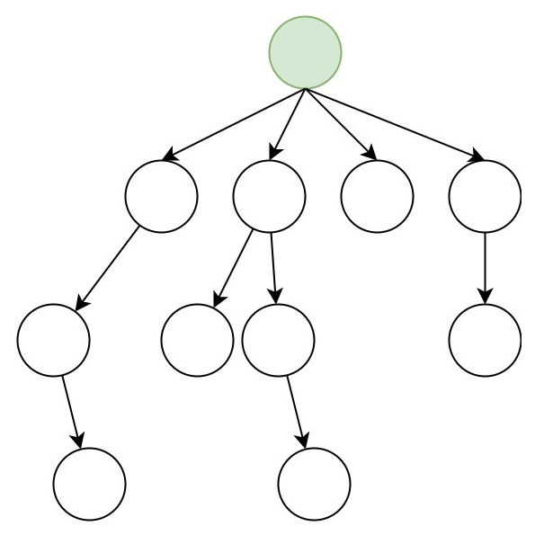

WikiExplore: See the connected articles in each page.
WikiExplore lets you discover new topics from ones you already like.
Placeholder
Implementation Features
WikiExplorer
General Trees
The data of each link and its hyperlinks are stored as nodes in a general tree.

Breadth-First Search
Breadth-First Search is used to explore each hyperlinked article recursively

Queue
And lastly the queue ADT is used to store the "pointers" to each node and their neighbors.
Contact
Email: n45jiang@uwaterloo.ca
LinkedIn: https://www.linkedin.com/in/nicholas-jiang-235aa1204/